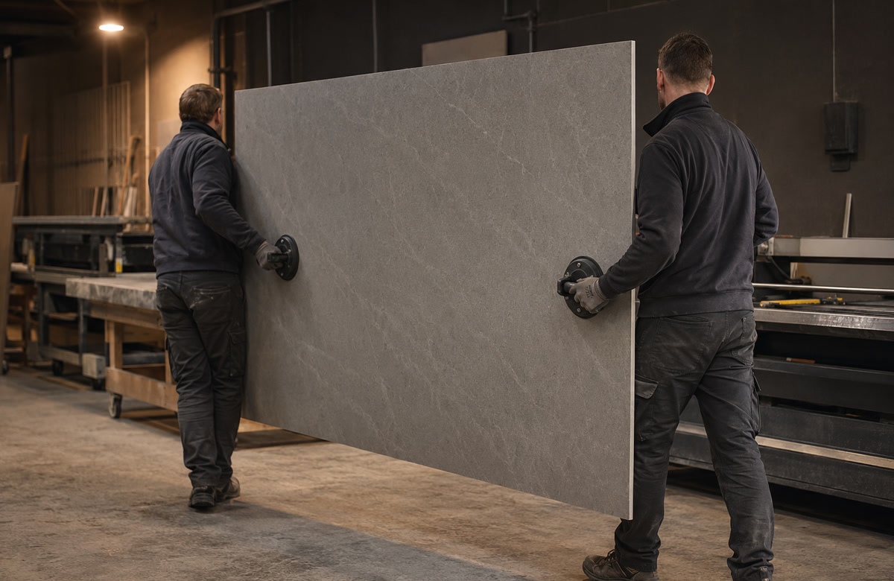
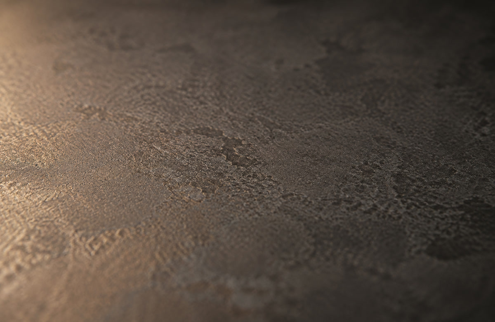

Large-format porcelain is refined clay and mineral pressed thin, then fired at temperatures close to 1200°C — hot enough to sinter the material into something almost glass-dense, in slabs up to 1650 × 3200mm.
Porcelain starts as a refined blend of kaolin clay, feldspar, and silica — ground fine, pressed under enormous force into a thin slab, then fired at close to 1200°C. That heat does something specific called sintering: the particles fuse together at a molecular level without fully melting, leaving almost no open pore structure behind.
That's the whole reason it performs the way it does. Ordinary ceramic tile is fired at lower temperatures and stays slightly porous. Porcelain's near-zero porosity is what makes it resist water, stains, and frost almost completely — there's simply nowhere for anything to get in.


Porcelain itself dates back over a thousand years, refined in China long before it reached Europe. Small porcelain tiles have been standard in bathrooms and floors for decades. What's genuinely new is the size: continuous-press manufacturing technology, developed in Italy and Spain from around the 2010s, made it possible to press a single slab as large as 1650 × 3200mm — big enough to cover a full kitchen island or a shower wall with one continuous piece.
Fewer joins means fewer places for grime to collect and a cleaner, more architectural look than a tiled equivalent ever gives.
Slabs run as thin as 6mm, which sounds fragile until you feel how dense the material actually is — the thinness is what makes it possible to lay directly over existing tile or countertop in a renovation, without ripping anything out first. It's UV-stable too, so unlike engineered stone it's a genuine option for an outdoor kitchen, braai area, or pool surround without fading.
Day to day it's about the lowest-maintenance surface on this site: scratch-resistant enough to shrug off normal kitchen use, heat-resistant enough that a hot pan won't mark it, and stain-resistant enough that most spills wipe off with nothing more than a cloth.
Once it's installed, porcelain is about as low-drama as a surface gets. The real fragility is earlier in the process — a large, thin slab needs to be handled and supported correctly, or it can crack before it ever gets used.
Cutting and edging needs specialist tooling — waterjet or diamond blades made for porcelain, not the tools used on natural stone. A slab that isn't fully supported underneath during install can crack from its own weight or a single point-load.
A sharp, hard impact on an unsupported edge or corner — think a heavy pot dropped edge-first — can chip it. Everyday scratching, staining, and heat are essentially non-issues.
Warm water and mild soap is enough. It doesn't need sealing and isn't fussy about which household cleaner you reach for.
An overhang or a cut-out (like a hob or sink) needs proper bracketing underneath — ask us about support if you're specifying a big island overhang.
The surface resists scratching and staining completely; a hard corner-on-corner knock is really the only everyday risk.
UV-stable and frost-resistant, so a braai area or pool surround is a legitimate use — just make sure the substrate underneath is installed for exterior conditions.
Repairable with a colour-matched filler for small chips. A larger corner loss on a visible edge may need that section replaced — send us a photo and we'll tell you which it is.
A sign the substrate underneath isn't fully supporting the slab. Not something to leave — get it looked at before it turns into a crack.
Often possible thanks to how thin the slabs run — it can go straight over sound existing tile in the right conditions, saving a demolition step. We'll confirm on a site visit.
A genuinely good fit — unlike engineered stone, porcelain doesn't fade or degrade in direct sun. Just tell us it's an outdoor application so we spec the right substrate.
Thinking about a seamless island or a full-height wall? Send us the dimensions and we'll tell you what's possible in one slab.